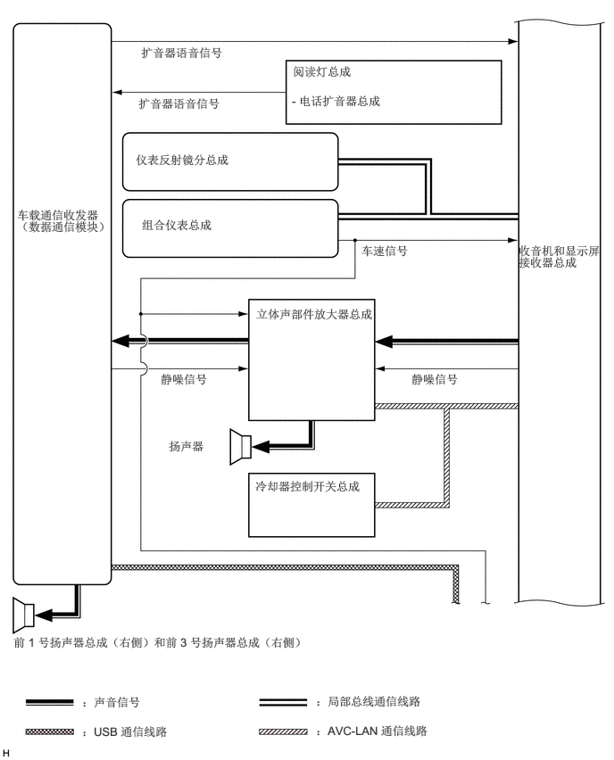

1.646,0.531 3.313,0.792
1.656,0.25
10
false
扩音器语音信号
1.615,1.125 3.281,1.385
1.656,0.25
10
false
扩音器语音信号
6.052,2.844 7.073,3.427
1.01,0.573
10
false
收音机和显示屏接收器总成
3.417,0.75 5.563,1.031
2.135,0.271
10
false
阅读灯总成
3.406,1.094 5.604,1.438
2.188,0.333
10
false
- 电话扩音器总成
1.583,1.781 3.365,2.031
1.771,0.24
10
false
仪表反射镜分总成
1.656,2.542 3.542,2.854
1.875,0.302
10
false
组合仪表总成
4.219,2.844 5.656,3.073
1.427,0.219
10
false
车速信号
2.99,3.583 4.823,4.135
1.823,0.542
10
false
立体声部件放大器总成
1.875,4.344 2.74,4.594
0.854,0.24
10
false
静噪信号
4.802,4.344 5.667,4.594
0.854,0.24
10
false
静噪信号
0.198,2.427 1.323,3.219
1.115,0.781
10
false
车载通信收发器 （数据通信模块）
0.156,7.417 4.375,7.865
4.208,0.438
10
false
前 1 号扬声器总成（右侧）和前 3 号扬声器总成（右侧）
1.969,5.125 2.615,5.354
0.635,0.219
10
false
扬声器
0.958,8.115 2.01,8.344
1.042,0.219
10
false
：声音信号
0.958,8.458 2.729,8.76
1.76,0.292
10
false
：USB 通信线路
3.688,8.104 5.927,8.344
2.229,0.229
10
false
：局部总线通信线路
3.688,8.448 5.927,8.688
2.229,0.229
10
false
：AVC-LAN 通信线路
2.979,5.594 4.323,6.042
1.333,0.438
10
false
冷却器控制开关总成